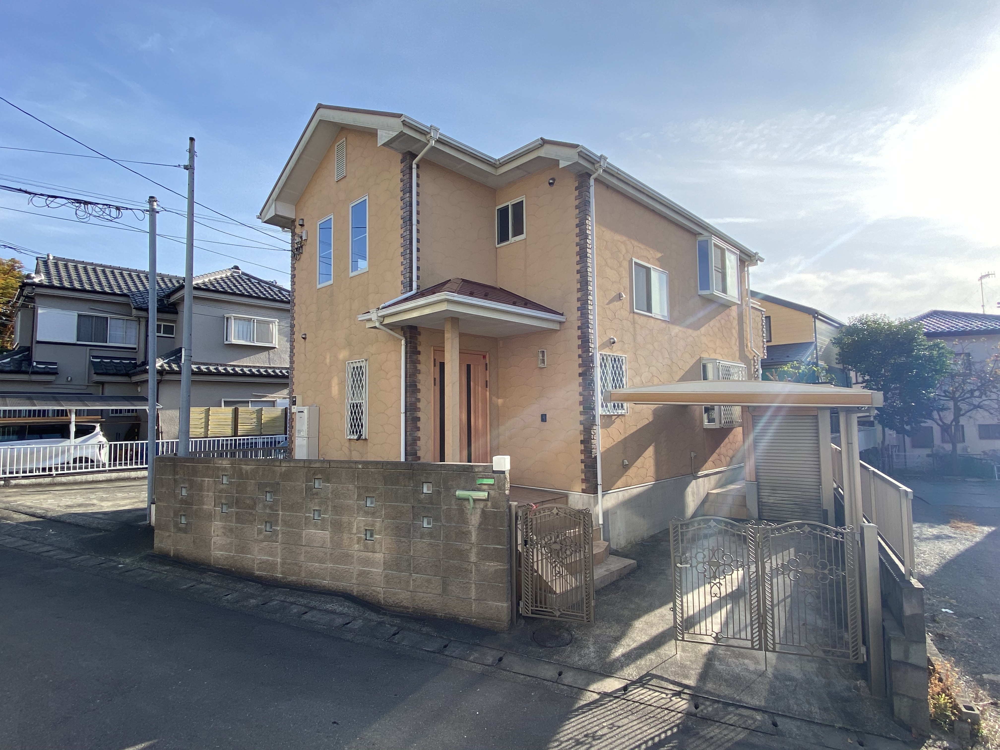
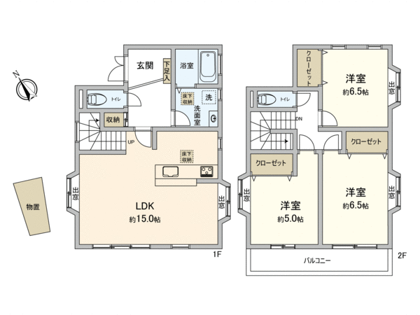
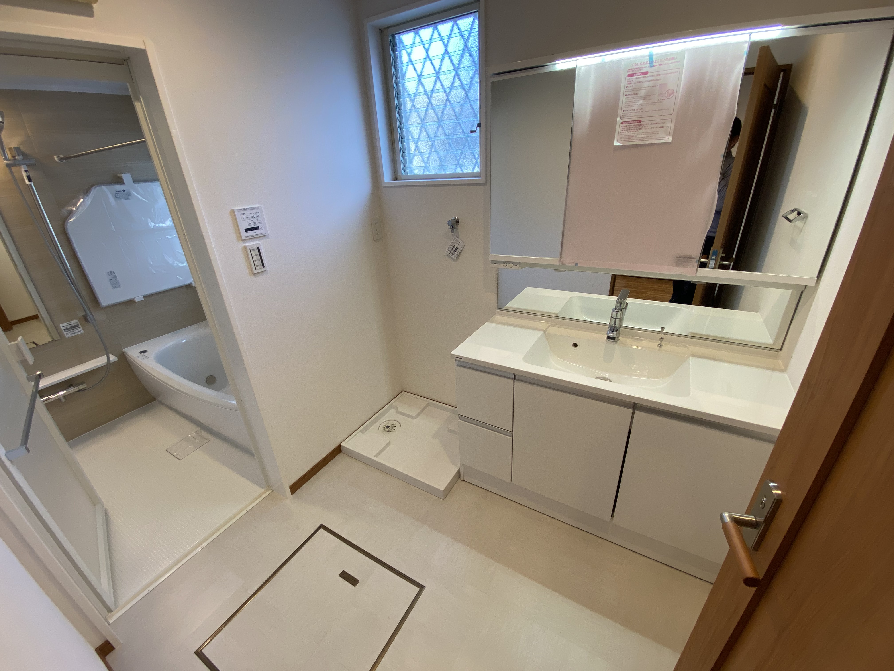
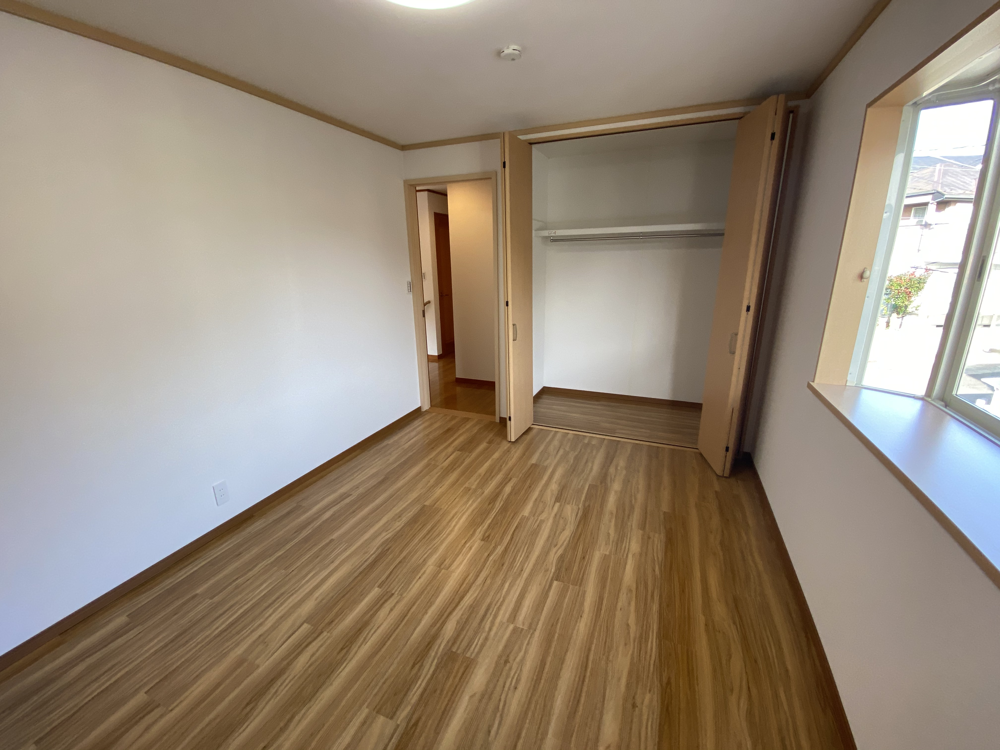

中古戸建東京都目黒区目黒本町
| 販売価格 | 8,280万円 |
|---|---|
| 最寄り駅 | 東急目黒線「武蔵小山」駅 徒歩○○分 |
| 間取り | 3LDK |
| 広さ | 120平米 (1F:60 2F:60) |
| 築年数 | 平成15年12月（築22年） |
おすすめポイント
緑溢れる閑静な高級住宅地○○町。
○○ハウス施工 室内フルリノベーションを施した中古住宅
○○ハウス施工 室内フルリノベーションを施した中古住宅



ご家族との会話も弾む対面式キッチン。調理のしやすいW2400サイズに食器洗浄乾燥機完備。ダイニングとの境目の通し柱を活かした格子間仕切りを採用

石造りのガーデンテーブルを配備したこだわりの和風庭。中心の松の木に合わせて日本庭園向けの植栽

ワイドタイプの洗面化粧台、浴室は1616サイズのLIXILユニットバスを採用。
